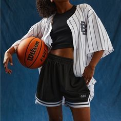

My technical skills include proficiency in programming languages such as Java, C++, and C. I have hands-on experience with development tools and frameworks like React. In addition to technical expertise, my soft skills have been developed through group projects, presentations, and teamwork. I am adept at effective communication and collaboration in diverse environments. Outside of my academic pursuits, I find joy in playing basketball, a passion that not only keeps me physically active but also fosters teamwork, strategy, and resilience. This blend of technical acumen and interpersonal skills reflects my commitment to being a well-rounded individual in both my academic and personal pursuits. 